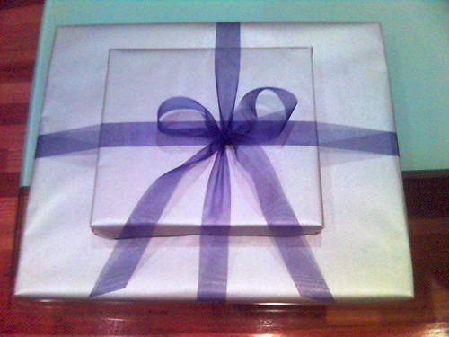
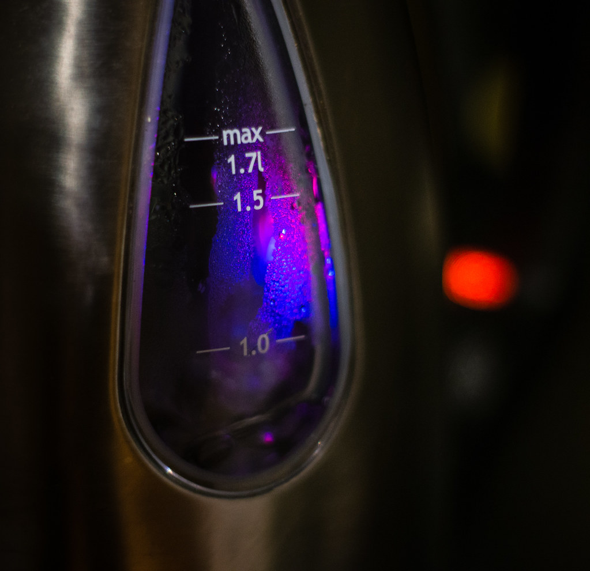
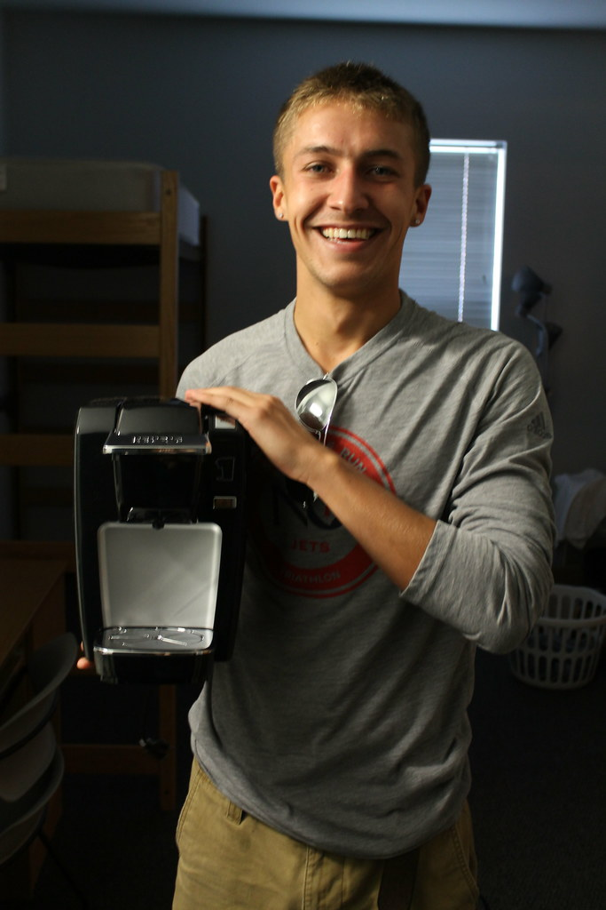
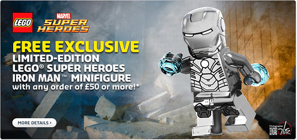

【2026年】一人暮らし応援家電ギフトに喜ばれるプレゼント5選｜友人別おすすめ
※本記事にはアフィリエイト広告（Amazon・楽天市場へのリンク）が含まれます。

結論：迷ったらこれ
電気ケトル(パナソニック)
一人暮らしを始めた友人や家族がいる人は、生活をより便利に、楽しくしたいと思うはずです。そのためには、実際に使える家電ギフトを選ぶことが大切です。
この記事では、一人暮らし応援家電ギフトに喜ばれるプレゼント5選を紹介します。友人や家族の生活を豊かにしてくれるアイテムを探してみましょう。
選び方のポイント
一人暮らし応援家電ギフトを選ぶ際、まず考慮するべきことは、相手の生活スタイルやニーズです。例えば、料理を頻繁に作る人には、調理家電が喜ばれるかもしれません。
また、家電ギフトは実際に使えるものであることが重要です。相手が使いこなせるアイテムを選ぶことで、より喜ばれるプレゼントになります。

1. 電気ケトル(パナソニック)
¥5,000〜¥10,000
電気ケトルは、水を速く沸かしてくれる便利な家電です。特に一人暮らしの人にとっては、手軽に紅茶やインスタントラーメンが作れるので喜ばれるアイテムです。
2. ハンドミキサー(キッチンエイド)
¥3,000〜¥6,000
ハンドミキサーは、バターを混ぜたり、卵を打ったりできる便利な家電です。ベーキングが好きなら必須のアイテムです。
3. フライパン(アイアン)
¥8,000〜¥15,000
フライパンは、炒め物や焼き物が作れる便利な調理家電です。特に一人暮らしの人にとっては、手軽にメインディッシュが作れるので喜ばれるアイテムです。

4. コーヒーメーカー(デロンギ)
¥10,000〜¥20,000
コーヒーメーカーは、毎朝コーヒーを楽しめる便利な家電です。特にコーヒーが好きなら必須のアイテムです。

5. アイロンミシン(ブラザー)
¥5,000〜¥10,000
アイロンミシンは、服を手軽に直せる便利な家電です。特に一人暮らしの人にとっては、手軽に修繕ができるので喜ばれるアイテムです。
おすすめ家電ギフト
ここでは、一人暮らし応援家電ギフトに喜ばれる5つのアイテムを紹介します。
実際の利用例
実際に利用したユーザーのレビューを参考にすると、より実用的で喜ばれる家電ギフトを選ぶことができます。
まとめ
一人暮らし応援家電ギフトを選ぶ際は、相手のニーズや生活スタイルを考慮することが大切です。
「結局どれにしよう」と迷ったら。
相手・予算・シーンを選ぶだけで、ギフトに向く定番を選びやすく絞り込みます。
まとめ
一人暮らし応援家電ギフトを選ぶ際は、相手のニーズや生活スタイルを考慮することが大切です。実際に使えるアイテムを選ぶことで、より喜ばれるプレゼントになります。
一人暮らしを始めた友人や家族に贈る、喜ばれる家電ギフトを探している人は、上記のアイテムを参考にしてみてください。きっと喜ばれるプレゼントが見つかるはずです。